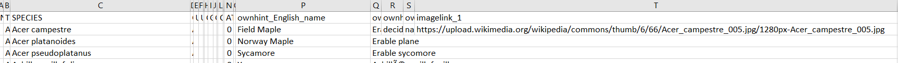
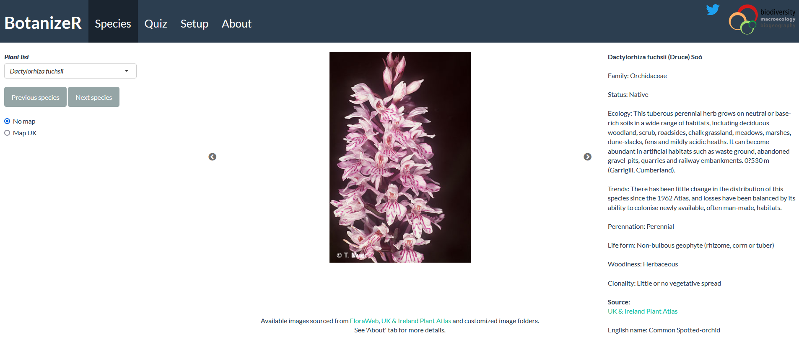
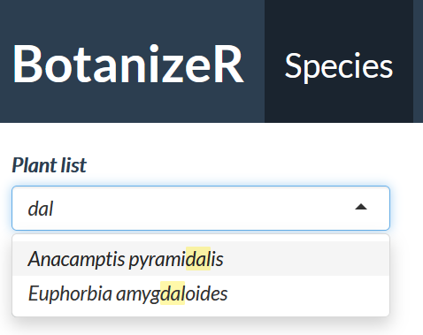

BotanizeR Shiny
Patrick Weigelt, Pierre Denelle
2021-08-05
BotanizeR_Shiny.RmdOverview
This tutorial illustrates how to use the BotanizeR Shiny application. It is based on the following instance.
When you load this webpage, you first arrive on the Quiz tab.
Quiz tab
Here you can practice your species identification skills in a playful way. Pictures of a random species will appear on the screen. If several pictures are available, you can switch pictures by clicking the left and right arrows on the picture’s side.
On the left, several checkboxes are made available. When clicking them, dedicated clues appear on the right side. On Figure 1, information about the ecology and the clonality of the species are displayed. Sources of the pictures are also available below these hints and the picture, and you can click them to get redirected to the relevant websites.
To enter your answer, you need to write in the bar called ‘Species name’. As indicated below, to submit your answer you need to hit ‘Enter’ on your keyboard or to click the ‘Submit’ button on the bottom. The app then tells you whether your attempt was correct or by how many characters your answer is differing from the truth. The app also recognizes whether you have guessed the right genus of the species. If you cannot find what species it is, you can always hit the arrow down on your keyboard or click the ‘Answer’ button to reveal the species’s name. Finding the answer, on your own or with the solution, automatically shows you all the possible hints.To change species, you can click the ‘New plant’ button or hit the arrow up on your keyboard. A new species will then appear.

The quiz keeps track of the species shown and and of your score. This is useful in two ways: first, the probability to pick a certain species will depend on your score. The app will pick up more often species which you struggle to identify and will tend to omit the ones you know. This feature can be disabled in the Setup tab. Second, you can highlight you score and see in a graphical way how much you performed. You can even share your score by using the Twitter button (Fig. 2).

Uploading/downloading a table
Finally, you have the opportunity to download the species list after practicing. This option is available by clicking the button ‘Upload/Download progress’ (Figure 3).

If you want to keep track of your past progress, you can then upload your list again. The number of successes and failures can then affect the probability to pick a certain species from the species list.
The functionality ‘Upload’ can also be used to run the quiz on a specific list of interest. For example, if you want to practice only the orchid species from Germany, you can upload a table with only this subset of species.
Please note that these tables need to formatted in a specific way.
Indeed, several columns need to be incorporated in the table. If they are not present, the Shiny app will not be able to use your data. The best way to have a table with the columns needed is first to directly download the species list already available within the Shiny app. In a second step, you can remove/add certain rows to update the species list. Finally, you can update your table.
While the existing columns should be kept, you also have the possibility to add extra columns that will give you supplementary hints. In the Setup tab, you can for example see that four extra hints are available (English_name of the species, French name, Description and Distribution).
If you want to add an hint, create a column with the name ‘ownhint_YourHint’
Setup tab
In the Setup tab you can modify a few options to customize your quiz. Here is what you can do:

Select a species list Here you can choose from which list you want to practise. You can either choose from a predefined list or upload your own list, as described above in the Quiz tab section. Upload lists will be available in the dropdown menu as soon as you upload them into the app.
Upload a list
Same principle than in the Quiz tab. You can upload your own species list. The table needs to have certain columns.
Subset by local species
You can here subset the species list by those species found in GBIF for a defined radius around a desired location. By default 10000 species are retrieved since this option is based on the code of BotanizeR_getlocallist(). Note that this function can take a while. If it is too long, consider reducing the radius.
Download the species list
As described in the Quiz tab, you can download the species table after practicing it with the quiz if you want ot keep track of your score.
Custom material
Here you define which supplementary hints and images to make available in the Species and Quiz tabs. The hints are added to the species table in new columns. Column names should be named ownhint_YourHint. You can also add personal images to display the species. These images can either be retrieved from a local folder on your computer (Image folders) or be added manually in the species table in dedicated columns named imagelink_X, X being a number. In these columns, you can add URL links to certain images.
For example, in Figure 5, we illustrate how to add an own hint for a species (its English name), and a own link for another image (Wikipedia link).

Quiz controls
Here you define whether the probabilies to sample species should be based on your previous score or not. It is by default activated.
Online resources
Here you tick or untick the available checkboxes that correspond to the two available online resources that come with BotanizeR: Floraweb and the Online Atlas of the British and Irish flora.
Species tab
In the Species tab, you can retrieve all information for each species using the drop down menu. The information available is dependent upon what you tick/untick and upload in the Setup tab.

Note that when the species list is long, it can be quite tedious to find the species you search for. To avoid this, you can simply type the species name or part of it in the drop down menu and then directly click it (Fig. 7).

References
Bundesamt für Naturschutz (BfN): http://www.floraweb.de
Image authors: https://www.floraweb.de/ueberfloraweb/bildautoren.html
Online Atlas of the British and Irish flora: https://www.brc.ac.uk/plantatlas/
Image authors: https://www.brc.ac.uk/plantatlas/content/photos